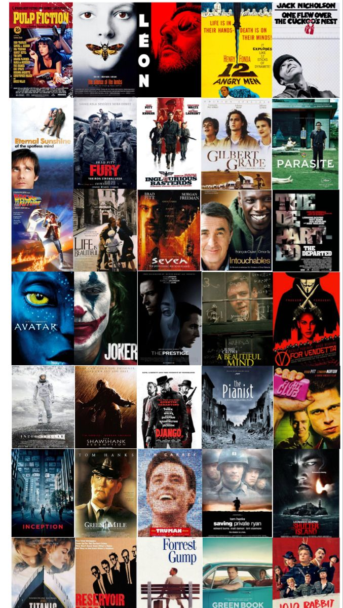

Hakkımda
Merhaba, ben Şevval Gökçen. Sakarya Üniversitesi Bilgisayar Mühendisliği 1. Sınıf öğrencisiyim.
Kendimi geliştirmeyi, araştırmayı ve teknoloji dünyasında yeni şeyler deneyimlemeyi çok seviyorum.
Şu an incelediğiniz bu site, benim ilk web tasarım projem! Kodlamaya olan hevesimle sıfırdan hazırladığım bu sayfada, hem kendimi tanıtıyor hem de her yeni satır kodda yeni bir şeyler öğrenmenin mutluluğunu yaşıyorum.
Hobilerim ve İlgi Alanlarım
Müzik Dinlemek
Yeni Yerler Keşfetmek
